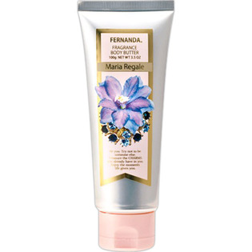

返回列表
产品名称：フェルナンダ フレグランスボディバター マリアリゲル

ＦＥＲＮＡＮＤＡ ＪＡＰＡＮ フェルナンダ フレグランスボディバター マリアリゲル １００Ｇ
メーカー ＦＥＲＮＡＮＤＡ ＪＡＰＡＮ
JANコード 4571395822011
商品の特徴
柔らか肌へ導くボディバター。
- 成分・分量
- 水,ステアリン酸,グリセリン,セタノール,ミネラルオイル,シア脂,(アクリル酸ヒドロキシエチル/アクリロイルジメチルタウリンNa)コポリマー,ジメチコン,香料, 加水分解コラーゲン,ヒアルロン酸Na,スクワラン,ーズヒップ油,オリーブ油,ホホバ油,マカデミアナッツ油,マヨラナ葉油,アロエベラ葉エキス,BG,ブチルカルバミン酸ヨウ化プロピニル,ステアリン酸グリセリル(SE),プロパンジオール
- 用法及び用量
- 適量を手に取り、脚、ヒジ、ヒザ等、乾燥が気になる部分にしっとりと馴染むまで塗り込んでください。